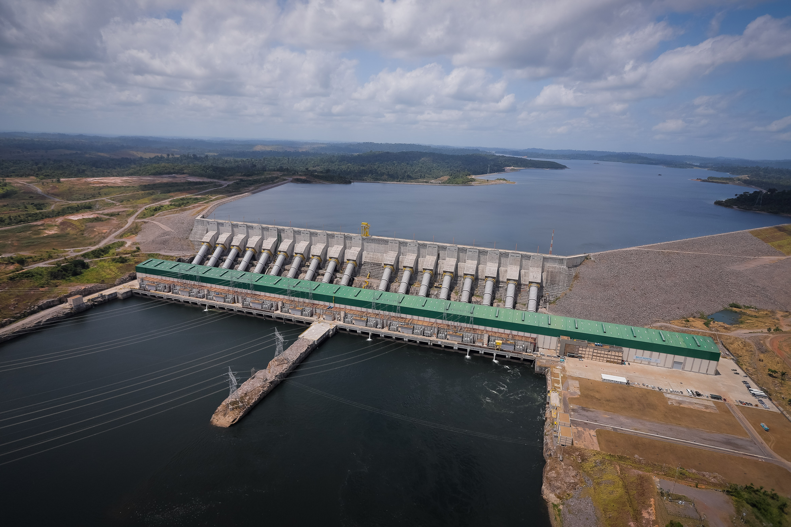

Imagine you have a super bouncy ball. When you throw it on the ground, it bounces back up, right? That
bouncing action is like energy. Energy is a special invisible thing that helps things happen and makes them move.
Just like how the bouncy ball has the power to bounce, everything around us, like toys, cars, and even our own
bodies, has its own kind of energy that makes it work and move.
Hydropower energy is like using the power of water to make things work. Imagine a big waterfall with water rushing
down really fast. People can put special machines in the water that use its energy to spin around, just like a
water wheel or a spinning top. So, hydropower is like having a super fun
and strong friend, water, that helps us make electricity by playing and spinning around!
In Brazil, while big dams like the

Belo Monte
and
 Itaipu brought power to cities and industries, they've also caused problems.
Indigenous communities have faced displacement from their lands, leading to cultural and social disruptions. The dams
can harm the Amazon rainforest, disrupting the natural flow of rivers and impacting local plants and animals. Sometimes,
the benefits of this energy don't reach everyone equally, with rural and marginalized communities often left with the
negative effects while others reap the rewards.
Itaipu brought power to cities and industries, they've also caused problems.
Indigenous communities have faced displacement from their lands, leading to cultural and social disruptions. The dams
can harm the Amazon rainforest, disrupting the natural flow of rivers and impacting local plants and animals. Sometimes,
the benefits of this energy don't reach everyone equally, with rural and marginalized communities often left with the
negative effects while others reap the rewards.

This map is made of data from some cool Brazilian institutions.
Vulnerability here refers to flood vulnerability in Brazil, with data on segments of flood-prone watercourses with attributes of occurrence frequency, degree of impact, and susceptibility to gradual flooding. The data is from ANA, the national water agency.
Go to Data Source!
Quilombola territory is a land area historically inhabited by descendants of Afro-Brazilian runaway slaves. The data is from INCRA, the National Institute of Colonization and Agrarian Reform.
Go to Data Source!
The other three layers are from IBGE, the Brazilian Institute of Geography and Statistics. It is the main provider of data and information for the country. With data from 2017, the layers cover:
Edif: Building component of an energy generation, transmission, and/or distribution system.
Hydropower: Architectural complex aimed at producing electric energy through the utilization of the hydraulic potential existing in a river, hydroelectric power station.
Termo: Electric energy generation system where the operational principle is the thermodynamic cycle of steam and/or gas.
Go to Data Source!
Global Energy Use x Large Dams Construction
In this map, you can see two layers: Energy Use by country (Feature layer by Maps.com_carto), in blue, and Construction of Large Dams (Source: Feature layer by tboucher), in green dots. In both cases, darker color represents higher intensity (darker blue: higher energy use; darker green: more dams). Here, you can see how countries in North use more energy, and that the South produces more energy. Why is this an issue?
Well, because of a larger trend called "Ecological imperialism," in which countries of the North extract the natural resources of the South (Fernandes, 2020). It is often the case that energy produced in developing countries is sold to developed ones, and, sometimes, even the owners of the producing companies are from the developed world! Of course that dams are not the only type of energy, but you can definitely see a trend here.
References
[1] Kids Discover. (2023). What is Energy? Kids Discover.
[2] World Wildlife Fund. (2023). The Energy Story - Chapter 3: Conventional Energy. Kids.Mongabay.com.
Comments